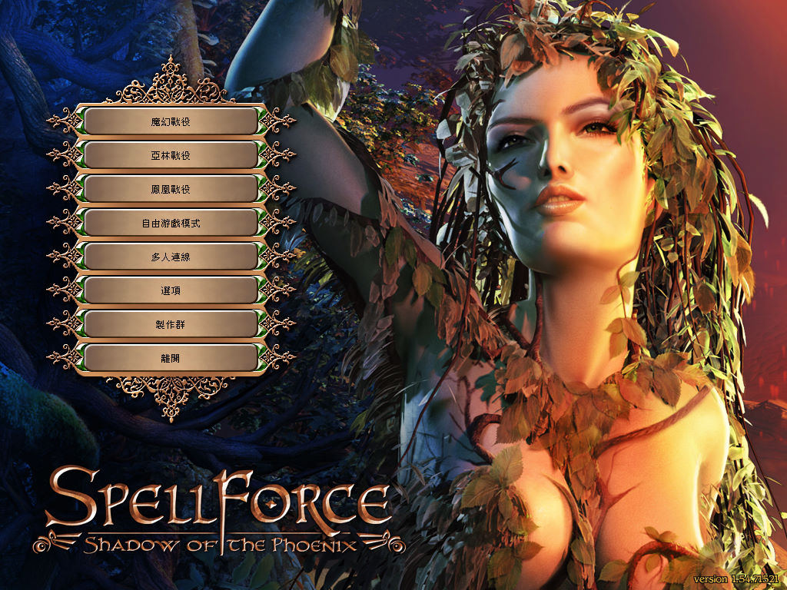
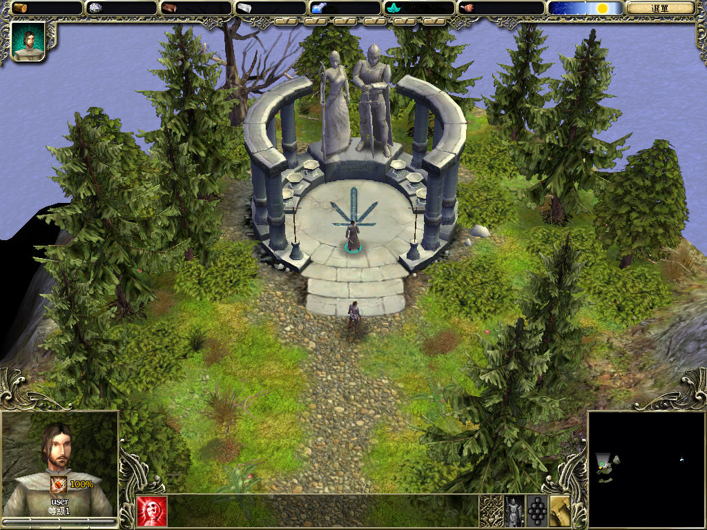

名稱：魔幻世紀 (SpellForce: The Order of Dawn，中文版)
簡介：Phenomic 2003年出品的即時戰略遊戲，兼具角色扮演元素，由JoWooD代理發行。2004
年推出「冬之氣息（Breath of Winter）」和「鳳凰之影（Shadow of the Phoenix）」
資料片，2005年推出「3合1女神鑽石合輯／白金版（Platinum Edition）」，2006年
由松崗中文化並代理發行 [待補]。


保護：英文原始版為光碟SecuROM 5.00+序號，繁中版為序號：
第一次（主程式）：6hfym-8ttqc-0bbnd-bmwhb-9zxou
第二次（資料片）：16x7g-gphz7-9oxqr-zv45p-cha15